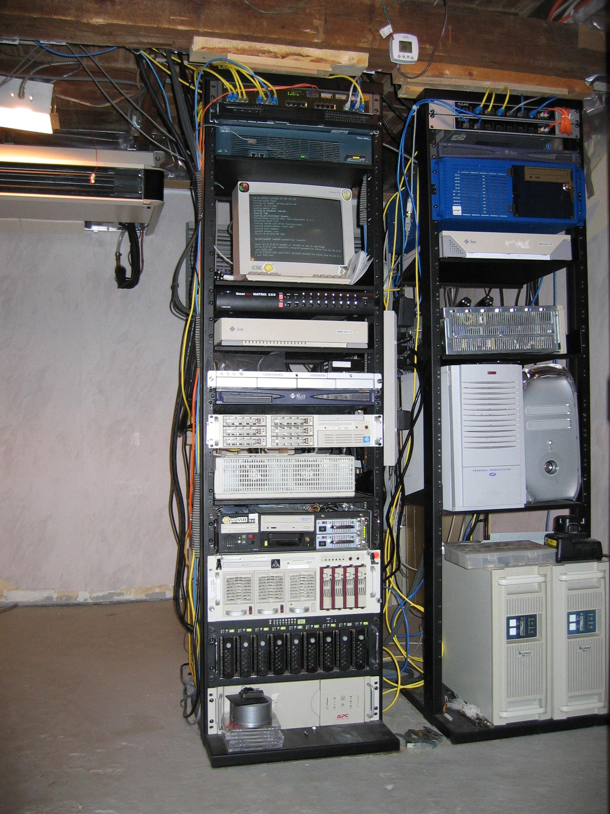

de el en fr hu hu ja nl pt
Tentang OpenBSD
Tujuan Proyek
Sumbangsih
Platform peranti keras
Perubahan harian
Keamanan Kriptografi
Pengguna Prestasi
Kegiatan Liputan
Dukungan komersial
Dapatkan OpenBSD
CD/Kaos/Poster
Meng-FTP Rilis
Menginstall OpenBSD
Kodesumber
AnonCVS
CVSync
CVSup
Web
Akal OpenBSD
Manual
FAQ
Perbaikan
Lacak Bug
Laporan Bug
Mailist
Paket Aplikasi
Buku Panduan
Jurnal OpenBSD
![[OpenBSD 3.7]](../images/puffy37.gif)
Proyek OpenBSD memproduksi sebuah sistem operasi sepadan UNIX yang MERDEKA, multi-platform berbasis 4.4BSD. Usaha kami menekankan portabilitas, standarisasi, keakuratan, keamanan proaktif dan kriptografi terintegrasi. OpenBSD mendukung emulasi biner pada hampir semua program mulai dari sistem SVR4 (Solaris), FreeBSD, Linux, BSD/OS, SunOS dan HP-UX.
OpenBSD tersedia gratis dari situs FTP kami, dan juga tersedia dalam rangkaian 3-CD dengan harga relatif terjangkau. Rilis terbaru saat ini adalah OpenBSD 3.7 yang dikeluarkan pada 19 Mei 2005.
OpenBSD dikembangkan oleh para relawan. Dana proyek pengembangan dan rilis didapat dari menjual CD dan kaos/t-shirt, juga dana bantuan dari beberapa organisasi dan perorangan. Dana tersebut akan memastikan bahwa OpenBSD akan tetap eksis, dan akan tetap dalam tataran sepenuhnya bebas bagi siapa saja untuk digunakan, lagi dan lagi, karena OpenBSD layak, sesuai dan pantas.
|
Proyek-proyek terkait:
OpenSSH,
OpenBGPD,
OpenNTPD,
OpenCVS
Situs miror, berdasar negara: AR AU BE BR BR CA CA CH DE DE DK GR HU ID IE IT JP LV MY NO PL PT PT RO SI TR US US YU Hak cipta © situs ini 1996-2005 OpenBSD. $OpenBSD: index.html,v 1.20 2005/07/03 07:28:33 saad Exp $ |
 |
{kind=link}